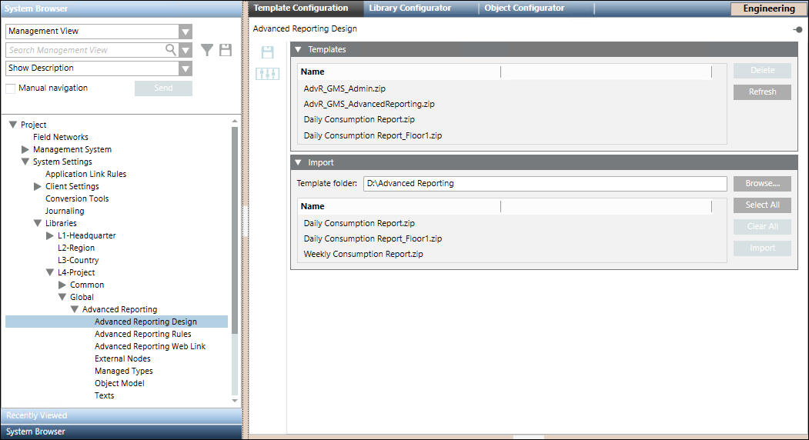

Template Configuration Workspace

Whenever the Advanced Reporting extension is installed, the Advanced Reporting libraries are equipped with certain pre-configured report templates. (see Configure Reporting Templates).
You can either use these templates as is, or can further configure them as required. After further configuration, these templates can be deployed back to the respective libraries using the Template Configuration application. In addition to configuring pre-configured templates, you can also add new templates to these libraries using this application. Procedures relating to modifying existing templates or adding new templates to these libraries are performed by Librarians.
Using the Templates expander you can add the report templates to the respective library on the management station. It lists the report templates files that you import using the Import expander.
- Delete: Deletes a selected template.
- Refresh: Refreshes the Templates expander.
Using the Import expander you can work with the report templates using the following buttons:
- Browse: Displays the Browse folder. Select the folder where the zipped files of the BIRT report templates are present.
- Select All: Selects all the listed files.
- Clear All: Clears the files listed in the Import expander.
- Import: Imports the selected files and saves them in the Advanced Reporting folder in the selected library in the customer project.
The toolbar provides you with the following icons:
- Save: Saves the Advanced Reporting folder in the selected library of the customer project to match the number of template files in the Templates expander.
Whenever you delete a template file from the Templates expander, you must click Save in order to delete the file from the Advanced Reporting folder in the selected library.
in order to delete the file from the Advanced Reporting folder in the selected library. - Customize: Customizes the BIRT templates according to the customization level.